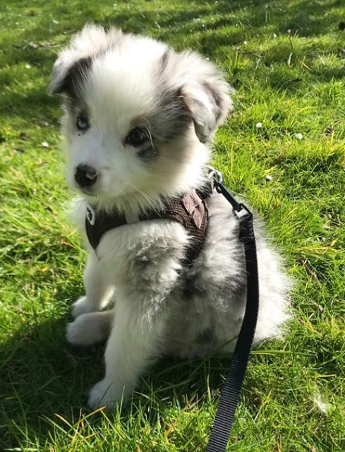
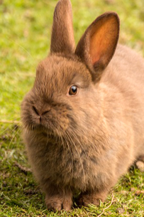

Welcome, I'm Amélie
I will present myself here with the help of :
Le wagon
Studies
IESEG business school of management, Lille
Prep BCPST class, Lycée Gerorges de la Tour, Metz
Degrate, La Doctrine Chrétienne, Strasbourg
Passions
Dancing: I have dancing during 9 years, classic dance, jazz and contemporary in the conservatory of Strasbourg
Sport: I like to watch different sport (for example the olympics game)
Music: I like to hear and to play music with my piano
Professionnal experiences
Seller in JouéClub, a toys store, July 2020
Ecology
I would preserve the planet
I sort my waste
I buy seasonal foods
I travel without using the plane
I buy less clothes or the facts myself
I use little or no single-use products
Social networks
Pets
 
Chrisa, Lucette, Balonn